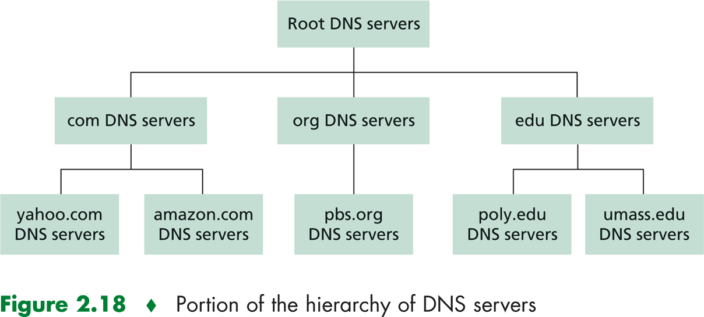
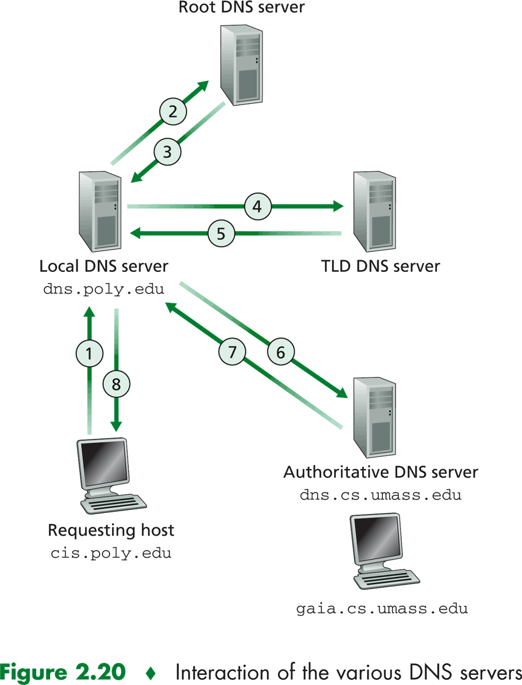
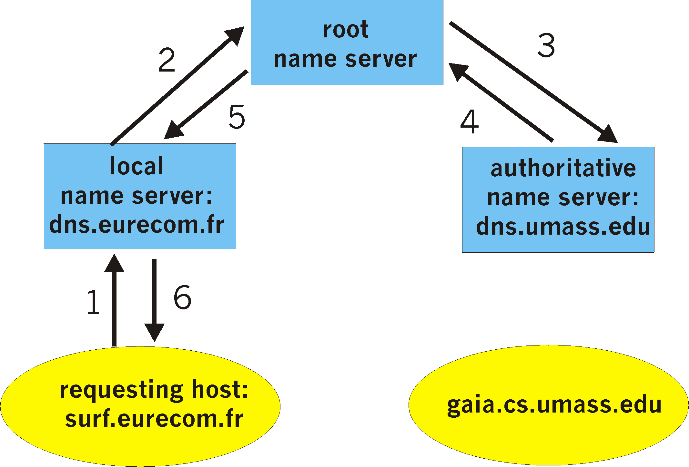
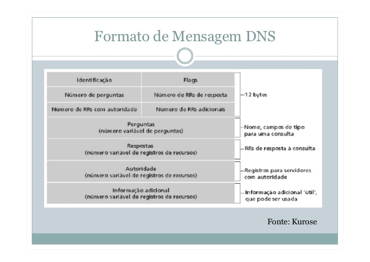

DNS, acrônimo para Domain Name System, é o sistema responsável
pela tradução de nomes de domínio em endereços IP, que por sua
vez são interpretados pelas interfaces de rede. Na internet
um cliente web faz solicitações DNS para descobrir para qual
endereço IP devem ser enviados os datagramas. As requisições
e respostas DNS utilizam como protocolo de transporte o UDP
(User Datagram Protocol).
Os servidores DNS possuem bancos de dados da forma
(type, name, value, TTL), onde type define o tipo de consulta
que será feita ao servidor, name corresponde ao domínio,
value ao respectivo endereço IP e TTL o tempo que o registro
será mantido no cache do servidor.(Kurose, 2016) Nenhum servidor possui
registros de todos os domínios na Internet, pois
o sistema funciona de forma hierarquica e distribuída, de modo
que seja escalável nas infraestruturas de redes, além de
possibilitar um funcionamento contínuo da rede mesmo que
alguns servidores DNS deixem de funcionar.

Figura 1 - Retirado de "Redes de Computadores: Uma abordagem 'top-down'" Kurose & Ross (2016)
Na Figura 1 está representada a estrutura hierarquica do DNS.
Os servidores Root possuem registros dos servidores Top Domain Level
(Lista dos servidores raíz).
Os servidores TLD, por sua vez, possuem registros dos servidores autoritativos
de domínios .com, .br, .edu, .net, e etc.
(Lista de servidores TLD).
Além destes, existem os servidores DNS locais, normalmente
pertencentes a uma ISP (Internet Service Provider). Estes, em geral,
fornecem endereços de outros servidores próximos.
As consultas aos registros dos servidores DNS podem ser feitas
de duas formas, iterativas, como representado na figura abaixo

Figura 2 - Retirado de "Redes de Computadores: Uma abordagem 'top-down'" Kurose & Ross (2016)
Ou de forma recursiva.

Figura 3 - Disponível em: https://userpages.umbc.edu/~dgorin1/451/OSI7/dcomm/dnsrecurs1.gif
O cabeçalho das requisições e respostas DNS tem o seguinte formato:

A seção de cabeçalho é formada pelos primeiros 12 bytes.
O campo "indetificação" é um número de 16 bits que identifica
a consulta. Esse número é copiado para a mensagem de resposta,
permitindo combinar respostas recebidas com consultas enviadas.
No campo de flags existem:
No cabeçalho, há também quatro campos de “tamanho”. Eles indicam o número de ocorrências dos quatro tipos de seção de dados que se seguem ao cabeçalho. A seção de pergunta contém informações sobre a consulta que está sendo feita. Essa seção inclui (1) um campo de nome que contém o nome que está sendo consultado e (2) um campo de tipo que indica o tipo da pergunta que está sendo feita sobre o nome — por exemplo, um endereço de hospedeiro associado a um nome (Type A) ou o servidor de correio para um nome (Type MX).
{kind=link}